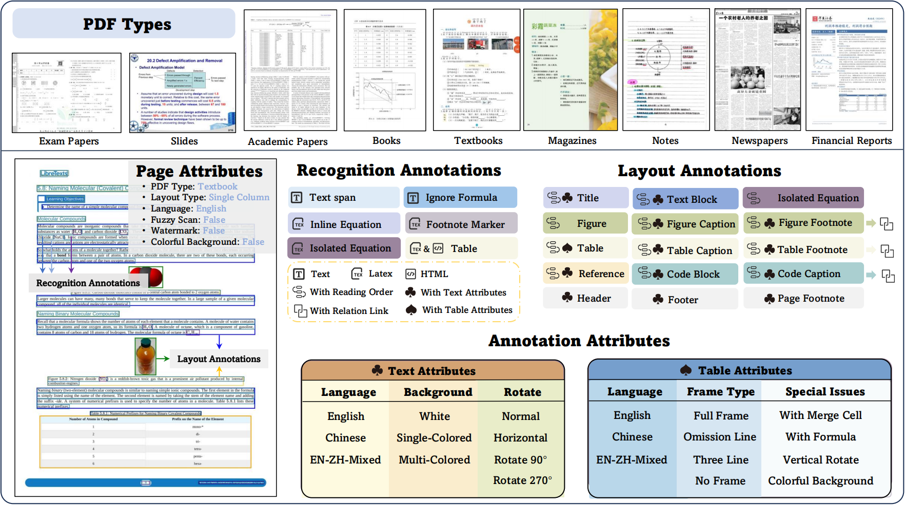
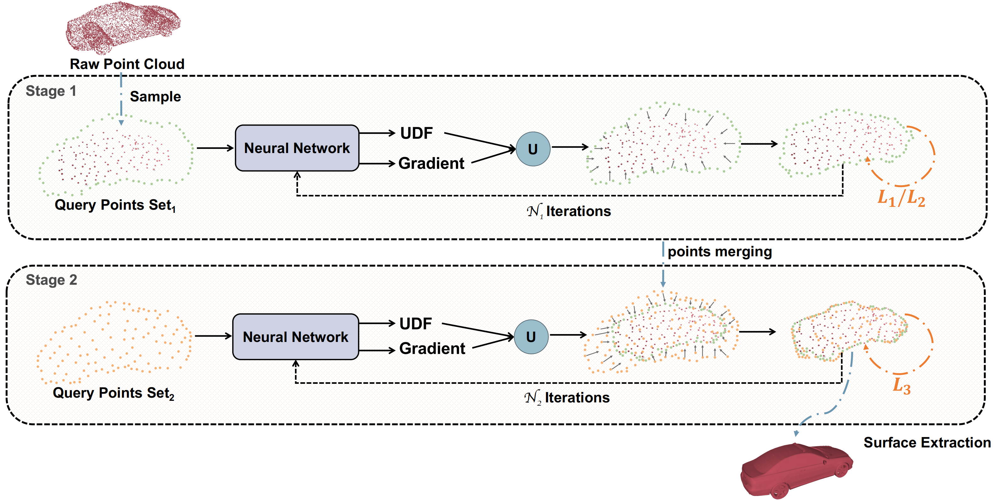
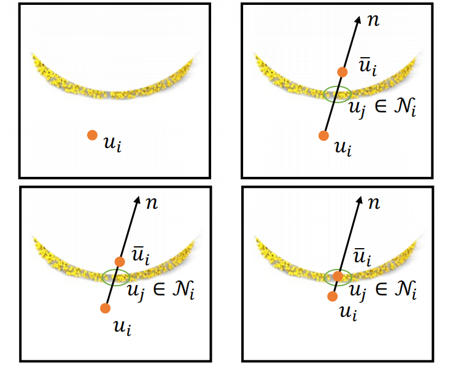

|
Rui Zhang I am a first-year PhD student supervised by professor Andrew Luo at Musketeers Foundation Institute of Data Science, The University of Hong Kong. I received my Master's degree in Computer Science from the School of Computer Science, Fudan University. Before that, I was a so-called "accountant" with a Bachelor's degree from the School of Management, Jilin University. My research interests include 3D reconstruction, 3D perception, and video generation. |

|
ResearchI am interested in building generative models that are capable of understanding the physical world and synthesizing physically-plausible 3D and video content. |
|  |
Omnidocbench: Benchmarking diverse pdf document parsing with comprehensive annotations
Linke Ouyang*, Yuan Qu*, Hongbin Zhou*, Jiawei Zhu*, Rui Zhang*, Qunshu Lin, Bin Wang, Zhiyuan Zhao, Man Jiang, Xiaomeng Zhao, Jin Shi, Fan Wu, Pei Chu, Minghao Liu, Zhenxiang Li, Chao Xu, Bo Zhang, Botian Shi, Zhongying Tu, Conghui He * Co-first authors CVPR, 2025 github / arXiv |
|  |
Learning Density Regulated and Multi-View Consistent Unsigned Distance Fields
Rui Zhang, Jingyi Xu, Weidong Yang, Lipeng Ma, Menglong Chen, Ben Fei ICASSP(oral), 2024 github / paper |
|  |
Progressive Growth for Point Cloud Completion by Surface-Projection Optimization
Ben Fei*, Rui Zhang*, Weidong Yang, Zhijun Li, Wen-Ming Chen * Co-first authors IEEE Transactions on Intelligent Vehicles, 2024 github / paper |

|
RefGaussian: Disentangling Reflections from 3D Gaussian Splatting for Realistic Rendering
Rui Zhang, Tianyue Luo, Weidong Yang, Ben Fei, Jingyi Xu, Qingyuan Zhou, Keyi Liu, Ying He arxiv, 2024 arxiv |

|
3D Gaussian Splatting as a New Era: A Survey
Ben Fei*, Jingyi Xu*, Rui Zhang*, Qingyuan Zhou, Weidong Yang, Ying He * Co-first authors IEEE Transactions on Visualization and Computer Graphics, 2024 arxiv |
InternshipI was a research intern at OpenDataLab, Shanghai AILab from June 2024 to May 2025, where I worked with Dr. Bin Wang and focused on document understanding and multimodal learning. I was fortunate to contribute to projects such as OmniDocBench, MinerU2.5, and CDM. |